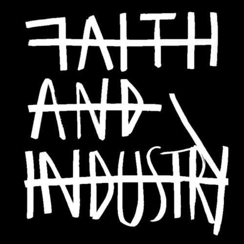
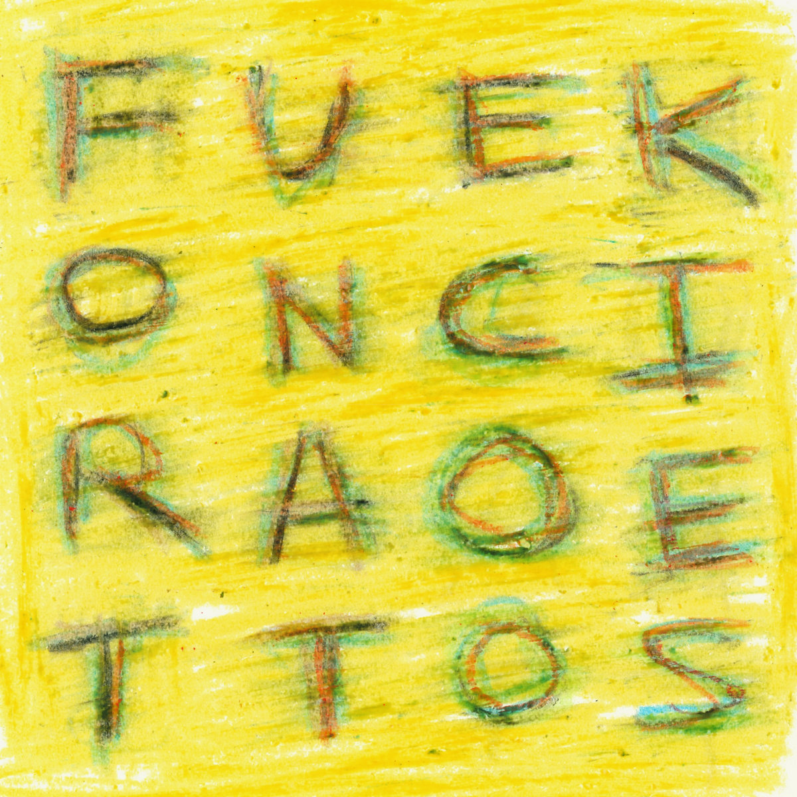
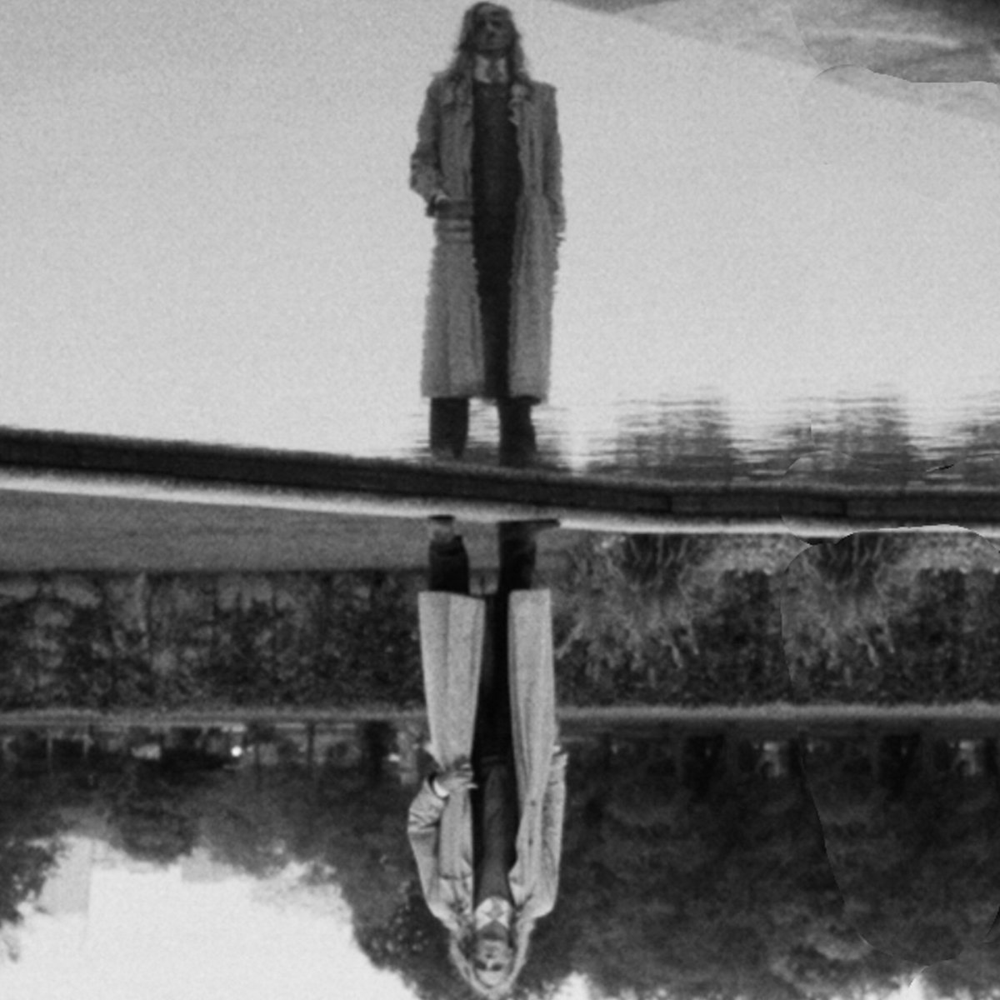
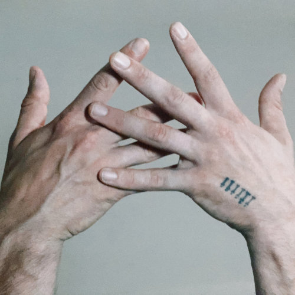
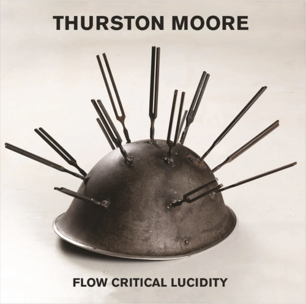
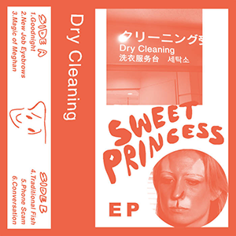
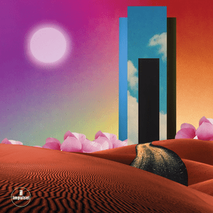
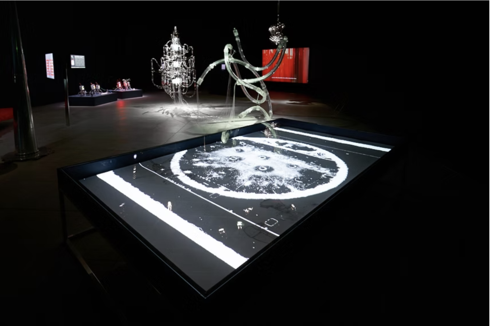

Kristian Craig Robinson
Musician and producer working as Capitol K. Recording, mixing and mastering across electronic, experimental, folk and alternative music. Runs Faith and Industry and works from London and Malta.
Listen
Capitol K releases and projects
Credits
Production, mix, recording, label
Studio
Recording, mix and mastering
Contact
capitolk@capitolk.com
Selected work

Faith and Industry
Label · ongoing
Total Refreshment Centre
Studio · legacy project
Ġiżimina
Album · Mix & mastering
Gaister
Album · Mix · AD 93

Fortunate Cookies
Album · 2026

Artichoke
Capitol K · Album · 2025

Alabaster DePlume — A Blade Because A Blade Is Whole
Recording · International Anthems · 2024

Thurston Moore — Flow Critical Lucidity
Recording · Daydream Library · 2024

Dry Cleaning — Sweet Princess EP
Recording, mix · Studio (TRC) · 2019

The Comet Is Coming — Trust in the Lifeforce of the Deep Mystery
Recording · Studio (TRC) · 2019

Score & sound design — Yu-Chen Wang
Artist film & installation · Tate, CERN, FACT, Tainan Art Museum